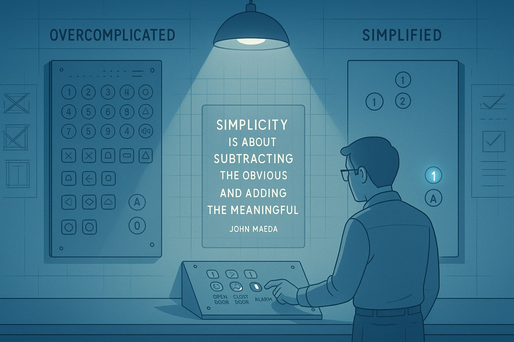

<!-- Step 4: Understanding Trade-offs -->
<section id="step4" class="step-section" data-step="4">
    <div class="step-content">
        <h2>4. Understanding Trade-offs</h2>
        <p>In elevator design, as in all engineering disciplines, understanding trade-offs is crucial. Every decision balances factors like performance, maintainability, and user experience.</p>
        
        <div class="interactive-content">
            <div class="tradeoff-container">
                
                
                <div class="quote-highlight">
                    <blockquote>
                        "Simplicity is about subtracting the obvious and adding the meaningful."
                        <cite>— John Maeda</cite>
                    </blockquote>
                </div>
                
                <div class="tradeoff-sliders">
                    <div class="slider-container">
                        <label>Velocity vs. Safety</label>
                        <input type="range" min="1" max="100" value="50" class="trade-slider" data-tradeoff="velocity-safety">
                        <div class="slider-labels">
                            <span>Higher Speed</span>
                            <span>Improved Safety</span>
                        </div>
                        <div class="slider-effect">
                            <div class="effect-description speed-effect">
                                <h4>Current Impact:</h4>
                                <p>Balanced approach with moderate speed and good safety features.</p>
                            </div>
                        </div>
                    </div>
                    
                    <div class="slider-container">
                        <label>Simplicity vs. Features</label>
                        <input type="range" min="1" max="100" value="30" class="trade-slider" data-tradeoff="simplicity-features">
                        <div class="slider-labels">
                            <span>Simpler Interface</span>
                            <span>More Features</span>
                        </div>
                        <div class="slider-effect">
                            <div class="effect-description simplicity-effect">
                                <h4>Current Impact:</h4>
                                <p>Favoring simplicity with essential features for ease of use.</p>
                            </div>
                        </div>
                    </div>
                    
                    <div class="slider-container">
                        <label>Cost vs. Reliability</label>
                        <input type="range" min="1" max="100" value="70" class="trade-slider" data-tradeoff="cost-reliability">
                        <div class="slider-labels">
                            <span>Lower Cost</span>
                            <span>Higher Reliability</span>
                        </div>
                        <div class="slider-effect">
                            <div class="effect-description reliability-effect">
                                <h4>Current Impact:</h4>
                                <p>Investing in quality components for better long-term reliability.</p>
                            </div>
                        </div>
                    </div>
                </div>
                
                <div class="design-outcome">
                    <h3>Current Design Outcome</h3>
                    <div class="outcome-visualization">
                        <div class="elevator-representation">
                            <!-- Elevator representation that changes based on slider values -->
                            <div class="elevator-speed-indicator">
                                <span class="indicator-label">Speed:</span>
                                <span class="indicator-value">Moderate</span>
                            </div>
                            <div class="elevator-features-indicator">
                                <span class="indicator-label">Features:</span>
                                <span class="indicator-value">Essential</span>
                            </div>
                            <div class="elevator-reliability-indicator">
                                <span class="indicator-label">Reliability:</span>
                                <span class="indicator-value">High</span>
                            </div>
                        </div>
                    </div>
                </div>
            </div>
            
            <div class="content-box">
                <h3>Key Trade-off Principles</h3>
                <ul>
                    <li><strong>No Perfect Solution:</strong> Every design decision involves compromise</li>
                    <li><strong>Contextual Optimization:</strong> The best trade-offs depend on specific requirements</li>
                    <li><strong>Measurable Impacts:</strong> Quantify effects of each decision when possible</li>
                    <li><strong>User-Centered Approach:</strong> Prioritize user needs in trade-off decisions</li>
                </ul>
                <p>Understanding these trade-offs leads to more deliberate and effective design choices. By explicitly considering what we gain and lose with each decision, we create more balanced solutions.</p>
                
                <div class="action-prompt">
                    <p>Try adjusting the sliders to see how different trade-offs affect the elevator design!</p>
                </div>
            </div>
        </div>
        
        <div class="step-nav">
            <button class="prev-step-btn" data-prev="3">Previous: Resource Gathering</button>
            <button class="next-step-btn" data-next="5">Next: Planning the Architecture</button>
        </div>
    </div>
</section> 